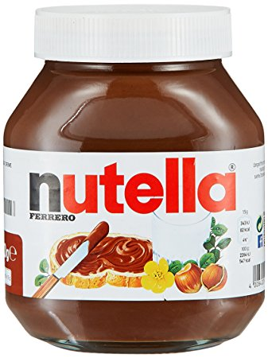
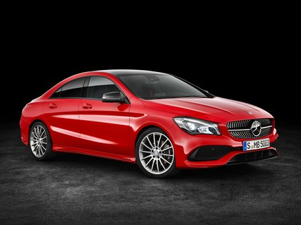

My name is Natnael Tesfai, and I am currently a sophmore te the University of Washington. I am studying business with a concentration on Marketing. A fun fact about me is that I am obsessed with Nutella. That hazelnut spread is like magic. You can smear it on some freshly toasted bread, and make yourself a delicous sandwich. You can even go gourmet style, and get some bananas. Dice those bananas until they are able to fit into the sandwich. If you like Peanut Butter and Bannana Sandwaiches, these Nutella and Bannana sandwiches are even better! If you are ever craving a snack, that is both delisious and cheap, just make yourself a nutella sandwich. Here is an image of this snack.
Growing up, I have always admired this car for its luxorious models. The Mercedes Benz epitomosizes class and luxory. My favorite line is the Mercedes Benz C class. My favorite car itself, is the Mercedes Benz CLA 200. That car has a sleek design, is incredibly fast, while still maintaining its luxorious style. Having gotten the chance to drive this car a couple times, I can attest to how luxorious it is. Driving this car makes you feel like you are flying first class on an airplane. To be able to be both luxorious, and as fast as it is, is why I love that car. It combines my love for fast cars, with my love for luxory. Here is an image of this car.
